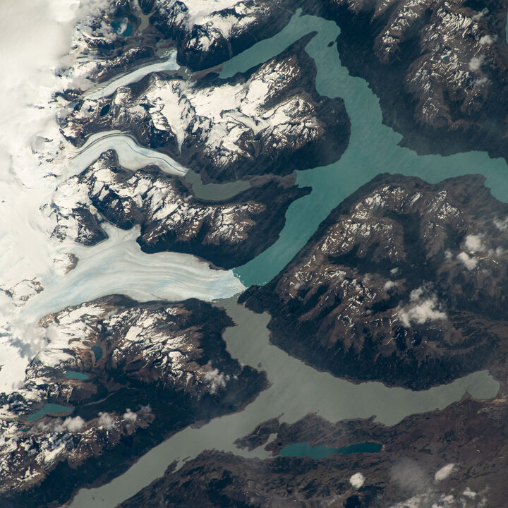
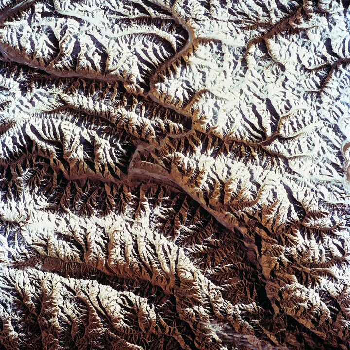
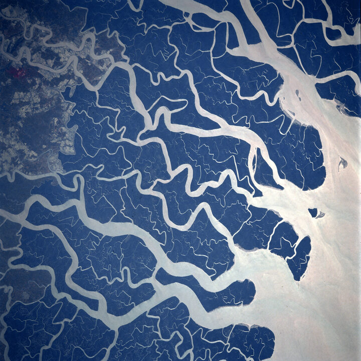

02 · Research
Terraces as climate archives
closedRiver terraces are nature’s landscape archive of climate and/or tectonic change, preserving former flood levels as successive benches, nested within valley walls. Each terrace marks a moment when the river paused at a given level before cutting down again, so the dated staircase becomes a timeline of incision. I use cosmogenic 10-Be dating of terraces of the Shehuén-Santa Cruz river system, Patagonia.





The Río Shehuén and Río Santa Cruz form the only river system that carries meltwater from the Southern Patagonian Icefield to the Atlantic Ocean. Running west to east across the Patagonian steppe at roughly 50°S, the system has formed and abandoned a remarkable flight of gravel terraces, preserved over 250 km along the valley. In its headwaters, the waxing and waning of ice drove cycles of erosion and deposition in sync with global glacial–interglacial rhythms. Below, a window in the subducting slab allows hot asthenospheric mantle to convect beneath the steppe, gently uplifting the whole region. Because the terraces are so well preserved and so far from active faulting, they record both climate and mantle convection without the confounding noise found in most mountain belts.

Using cosmogenic ¹⁰Be dating, we found the terraces range in age from about 33 ka to 1.5 Ma, with each terrace age lining up closely with the known chronology of Patagonian glaciations. The terrace chronology revealed a clear shift in rhythm: the oldest terraces formed in quick succession around 990–1030 ka, but younger terraces fall into a steadier ~100,000-year beat — the same change in rhythm observed in the global climate over the last 1 million years (known as the Mid-Pleistocene Transition). The landscape re-tuned itself to a new climatic tempo, most plausibly through changes in the balance between sediment supply and water discharge delivered by the glaciers.

Terrace ages tell us something about the timing of terrace incision, and their relationship to climate. But can we use the geometry of river terraces to extract quantitative information about the climate regimes that formed them?
The terrace long-profile. Working with Andreas Ruby (student) and colleagues, we applied a physically-based model of alluvial river evolution to the Río Santa Cruz, testing how sediment supply, water discharge, sea-level change, and the flexing of the land under ice (glacial isostatic adjustment) each leave their own fingerprint on terrace geometry. The models show that individual drivers, and their combinations, produce distinct and recognisable terrace patterns — turning the qualitative tradition of terrace interpretation into something quantitative and testable.

The terrace cross section. Cosmogenic dating is slow, costly, and requires physically reaching every surface, we developed a complementary approach to dating terraces from topography alone: morphological dating. Led by Lennart Grimm (student), this method reads the gradual smoothing of the terrace step, or riser, between successive terraces: hillslope processes smooth the risers over time, so their cross-sectional shape carries information about their age. It offers a scalable, low-cost way to extend terrace chronologies across whole landscapes.
Taken together, these three studies turned the Shehuén–Santa Cruz terraces into one of the best records of a landscape responding simultaneously to climate cycles and mantle convection. This project was funded by the ERC Gyroscope Grant.
Publications